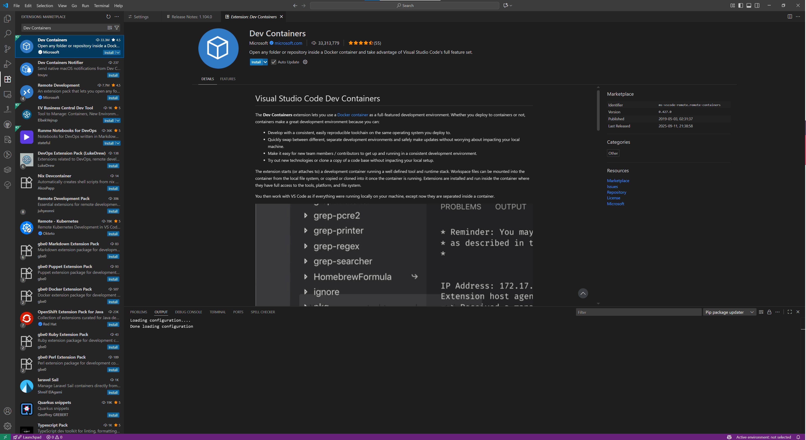
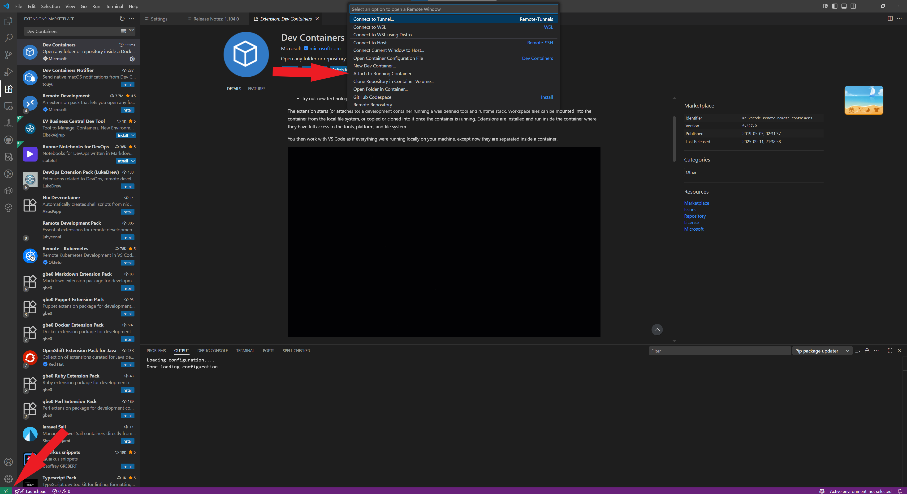
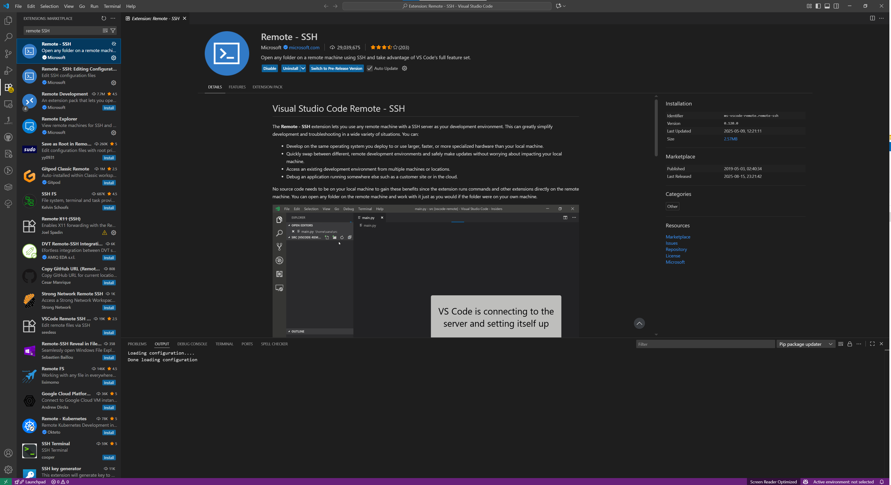
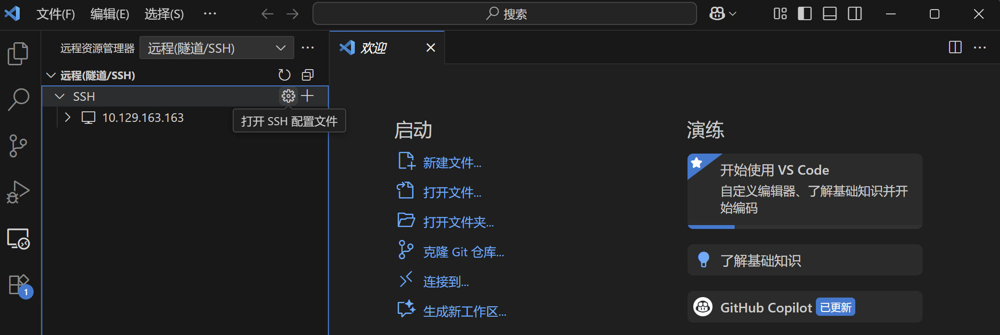
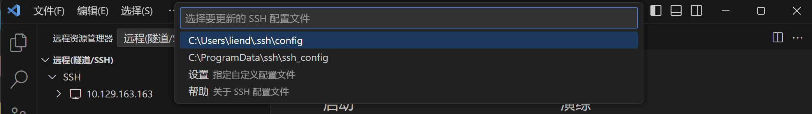
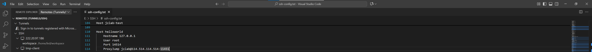
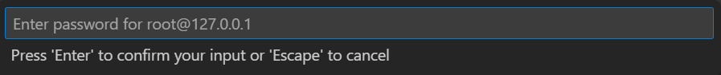

Computer Architecture 2025fall Project 1
By Prof. Jie Zhang
Due: 11:59:59 pm, October 8, 2025
Nowadays, ChampSim has become a widely used trace-based simulation framework in the computer architecture research community, especially for studying cache hierarchies, branch predictors, and memory prefetching techniques. This project will introduce how to build and configure a computer architecture simulation framework using the ChampSim simulator. We will study how different processor components, cache configurations, branch predictors, and memory prefetchers can affect the overall performance of a computer system.
Please note that ChampSim simulations can be time-consuming, especially when using long traces or running a large number of configurations. Therefore, you are strongly encouraged to start the project as early as possible.
For your convenience, we have tried to minimize the difficulties of setting up ChampSim. However, some configuration and compilation steps may still be tricky. Whenever you encounter any problems during this project, please refer to the ChampSim documentation or contact the TAs via WeChat or e-mail. All the following instructions and configurations have been verified on Ubuntu 22.04 environments.
Setup: Install Toolchain and Compile ChampSim
Install environment
As a computer architecture simulator, ChampSim requires several software prerequisites to compile and run properly. To minimize the difficulty of setting up the environment, we provide a Docker image with the required prerequisites already installed.
To use the image, you first need to install Docker. On Windows systems, you can easily install it by installing Docker Desktop; on Linux systems, you can install Docker following the documentation.
You can use the following command to check your Docker installation:
docker --version
# You'll see contents like the following:
Docker version 24.0.2, build cb74dfc
On Windows systems, pay particular attention to verifying whether WSL2 is already installed on your computer or whether Hyper-V functionality is enabled. Failure to do so may result in various unexpected issues during the installation process. We recommend using WSL2 to support Docker.
You can verify if WSL2 is installed with the following command:
wsl --version
Once you've installed Docker, you can pull our image with the following command:
docker pull lldary/archlab-champsim:v0.1
If you can't connect to Docker Hub, you can also download the image archive from our PKU Disk and load it with the following command:
docker load -i archlab-image.tar
All the resources used in labs will be visible in the PKU Disk.
After pulling (loading) the image, you can find it by running the following command:
docker images
# you'll see contents like the following:
IMAGE ID DISK USAGE CONTENT SIZE EXTRA
lldary/archlab-champsim:v0.1 4ef6e30da79f 5.45GB 2.31GB
If you prefer to install the prerequisites for ChampSim manually, you can install the basic development tools with the following commands:
sudo apt-get update
sudo apt-get upgrade
sudo apt install build-essential git cmake python3
Depending on the version of ChampSim used in this project, additional packages may be required. If you encounter a missing dependency during compilation, please refer to the error message or contact the TAs.
After preparing the environment, you should clone the codes of ChampSim. We have provided a skeleton code which you can clone from its repo, or download the code package from PKU Disk and then extract the codes to a directory.
On Windows systems, please run the following command before cloning the code repository:
git config --global core.autocrlf false
This will prevent compilation issues caused by differences in line ending definitions between Windows and Linux.
Once you have the code, you can proceed to build ChampSim.
If you are using Docker, you need to first create a container to set up the environment. You also need to mount the code onto the container when you start it, so that you can read and modify the code files inside the container.
The command is as follows:
docker run -it --name <container name> -v <local path>:<container path> lldary/archlab-champsim:v0.1 /bin/bash
-
The
-itoption means to attach stdin, stdout and stderr to the current terminal, so you can operate the container interactively. -
The
--name <container name>option specifies the name of the new container. It may be useful when you try to run other commands on the container, but it is optional, because you can always specify a container by its individual ID. You can see the IDs and names of all existing containers with this command:docker ps -a # you'll see contents like the following: CONTAINER ID IMAGE COMMAND CREATED STATUS 43518d84eb29 chaselab/archlab "/bin/bash" 14 seconds ago Exited (0) -
The
-v <local path>:<container path>option allows you to mount a local directory to a directory in the container. Here, you need to specify thelocal pathas the path to yourChampSimcode, for example,C:\Users\myname\ChampSim. Thecontainer pathcan be simple, for example,/champsim. When you enter the container, you can see all the code under the container path.Please note that this option only accepts absolute paths, otherwise the contents in the directory will not be correctly mounted.
-
The first argument after the options is the image name, here is
chaselab/archlab. -
The second argument is the command you want to run upon container start. Here we use
/bin/bashto start an interactive terminal.
Thus, filling up all the options and arguments makes the command look like this:
docker run -it --name lab1 -v C:\Users\myname\ChampSim:/champsim chaselab/archlab /bin/bash
If you still cannot compile or cannot set up WSL and Docker Desktop, feel free to contact TA for a server account.
After starting the container, you can run any commands in it. However, you need to know more Docker commands when meeting other situations:
-
If you've closed the container by running
exitand want to run the lab again, you do not need to create another container withdocker run. Instead, you can use the following command to restart your container and attach stdin, stdout and stderr to your terminal:docker start -ia <container ID/name>If you are using a Windows system, you can also launch the corresponding container directly from the graphical interface of Docker Desktop.
-
If you start a simulation and want to close the terminal while keeping
ChampSimrunning, you can typectrl+p+qto detach from the interactive environment and return to your own terminal. Then, when you want to return to the container, you can use the following commands:docker attach <container ID/name> # return to the original container terminal docker exec -it <container ID/name> <command> # start a new container terminal -
If you want to make accessing Docker feel similar to accessing a remote server, you can use the Dev Containers extension for VS Code (refer to Appendix). This allows you to directly access the running container through VS Code, and use VS Code to edit code and execute command-line commands.
Compile ChampSim
Once the container has started, or if you have manually prepared the environment, you can proceed to compile ChampSim.
First, enter the ChampSim source directory:
cd ChampSim
Before compilation, create a basic configuration for the simulator:
./config.sh champsim_config.json
Then compile the generated configuration:
make -j $(nproc)
The -j $(nproc) option allows make to use all available CPU cores to accelerate the compilation process.
If you encounter compilation errors, first check whether the required compiler and build tools are installed:
g++ --version
make --version
python3 --version
You can also clean the generated build files and try again:
make clean
./config.sh champsim_config.json
make -j $(nproc)
Please make sure that the configuration file is valid before compiling.
Building ChampSim is generally much faster than building a full-system simulator such as gem5. The exact compilation time depends on your computer and the selected configuration.
If compilation completes successfully, you should see output indicating that the ChampSim executable has been built successfully.
You can then check the generated executable:
ls bin/
For example, if the configuration contains:
{
"executable_name": "simple"
}
you should see:
simple
in the bin/ directory.
You can verify that the executable is runnable with:
./bin/champsim --help
If the command successfully prints the available command-line options, your ChampSim installation and compilation are working correctly.
Please include a screenshot that shows your ChampSim can be configured and compiled correctly in your report.
Part 1: Create and Run a Simple Configuration
ChampSim is a trace-based microarchitecture simulator widely used in computer architecture research. ChampSim focuses on simulating the processor microarchitecture and memory hierarchy. In this part, you will learn how to configure and run a simple ChampSim system, including the CPU core, cache hierarchy, branch predictor, memory hierarchy, and prefetcher.
Following the instructions in this part, you will build a basic ChampSim configuration and run it with a representative instruction trace. You will also learn how different processor and memory-system configurations can affect simulation performance.
Let's get started by creating a config json for the project:
touch lab1_config.json
ChampSim configurations are specified using JSON files. A configuration describes the major components of the simulated microarchitecture, including the CPU, instruction and data caches, branch predictor, prefetchers, and DRAM system.
For example, a simple configuration can be organized as follows:
{
"executable_name": "champsim-lab1", // Name of the compiled simulator executable
"ooo_cpu": [
{
"frequency": 4000, // Core operating frequency (in MHz)
"ifetch_buffer_size": 64, // Size of the instruction fetch buffer
"decode_buffer_size": 32, // Size of the decode buffer
"dispatch_buffer_size": 32, // Size of the dispatch/allocation buffer
"register_file_size": 128, // Size of the physical register file
"rob_size": 352, // Size of the Reorder Buffer (ROB)
"lq_size": 128, // Load Queue (LQ) size
"sq_size": 72, // Store Queue (SQ) size
"fetch_width": 6, // Number of instructions fetched per cycle
"decode_width": 6, // Number of instructions decoded per cycle
"dispatch_width": 6, // Number of instructions dispatched per cycle
"execute_width": 4, // Number of instructions executed per cycle
"lq_width": 2, // Load Queue bandwidth (operations per cycle)
"sq_width": 2, // Store Queue bandwidth (operations per cycle)
"retire_width": 5, // Number of instructions retired per cycle
"branch_predictor": "hashed_perception", // Branch predictor algorithm type
"btb": "basic_btb" // Branch Target Buffer (BTB) type
}
],
"L1I": {
"sets": 64, // Number of sets in the L1 instruction cache
"ways": 8, // Associativity (ways) of the L1 instruction cache
"mshr_size": 16, // Number of MSHRs for L1 instruction cache
"prefetcher": "no", // L1 instruction cache prefetcher type ("no" for disabled)
"replacement": "lru" // Cache replacement policy (Least Recently Used)
},
"L1D": {
"sets": 96, // Number of sets in the L1 data cache
"ways": 8, // Associativity (ways) of the L1 data cache
"mshr_size": 16, // Number of MSHRs for L1 data cache
"prefetcher": "no", // L1 data cache prefetcher type ("no" for disabled)
"replacement": "lru" // Cache replacement policy (Least Recently Used)
},
"L2C": {
"sets": 2048, // Number of sets in the L2 cache
"ways": 16, // Associativity (ways) of the L2 cache
"mshr_size": 20, // Number of MSHRs for L2 cache
"prefetcher": "no", // L2 cache prefetcher type ("no" for disabled)
"replacement": "lru" // Cache replacement policy (Least Recently Used)
}
}
The exact configuration fields may vary depending on the ChampSim version used in this project. Please refer to the configuration files provided with the project for the supported parameters.
ChampSim executes a previously collected instruction trace and models how the instructions interact with the processor and memory hierarchy.
Selecting a CPU Model
ChampSim provides different processor configurations for evaluating microarchitectural behavior. The CPU model determines how instructions are fetched, decoded, scheduled, executed, and retired.
Important parameters may include:
- Instruction window size
- ROB size
- Load/store queue size
- Number of execution ports
- Dispatch width
- Execute width
- Retire width
These parameters allow you to study how different processor resources affect IPC and other performance metrics.
Configuring the Cache Hierarchy
The cache hierarchy is one of the most important components in ChampSim. A typical configuration contains:
- L1 instruction cache (L1I)
- L1 data cache (L1D)
- L2 cache
- LLC
- DRAM
Each cache can be configured with different numbers of sets and ways, queue sizes, MSHR capacity, latency, replacement policy, and prefetcher.
For example, an L1 data cache may be configured as:
"L1D": {
"sets": 64,
"ways": 8,
"rq_size": 32,
"wq_size": 32,
"pq_size": 32,
"mshr_size": 8,
"latency": 4,
"prefetcher": "no",
"replacement": "lru"
}
The number of sets and ways determines the cache capacity and associativity. The MSHR size limits the number of outstanding cache misses that can be tracked simultaneously.
Configuring Branch Prediction
Branch prediction is another important component of the ChampSim microarchitecture model. A branch predictor attempts to predict the target and direction of conditional branches before their actual outcomes are known.
For example, the configuration may specify:
"branch_predictor": "bimodal"
Different branch predictors can have significantly different prediction accuracy and performance. In later parts of the project, you will compare different branch prediction mechanisms and investigate workloads that are difficult to predict.
Running a Trace
ChampSim does not directly execute an application binary. Instead, ChampSim executes an instruction trace generated from a real program.
Therefore, you first need to obtain a trace:
cd traces
The provided trace files under the traces directory.
The exact trace format and trace-generation procedure depend on the ChampSim version and the traces provided with this project. You should use the traces distributed with the project unless otherwise specified.
Building ChampSim
After preparing the configuration, build ChampSim using the provided build system.
For example:
./config.sh lab1_config.json
make -j $(nproc)
After a successful build, the ChampSim executable will be generated according to the selected configuration.
Running ChampSim
Once ChampSim has been compiled, run the simulator with the selected trace:
./bin/<executable_name> --warmup_instructions 100000000 \
--simulation_instructions 500000000 \
traces/binary_search.champsimtrace.xz
The warmup period allows the cache hierarchy and branch predictor to reach a more representative state before performance statistics are collected.
The simulation period determines the number of instructions used for collecting the final performance statistics.
ChampSim will report statistics such as:
- Instructions per cycle (IPC)
- Branch prediction accuracy
- Cache hit/miss statistics
- MPKI
- Memory bandwidth
- DRAM statistics
For example, the output may contain information similar to:
CPU 0 cumulative IPC: 1.XX
CPU 0 branch MPKI: X.XX
CPU 0 L1D TOTAL ACCESS: XXXXX
CPU 0 L1D TOTAL MISS: XXXXX
CPU 0 L2 TOTAL ACCESS: XXXXX
CPU 0 L2 TOTAL MISS: XXXXX
The exact output format depends on the ChampSim version and configuration.
Please include the following in your report:
-
The
ChampSimconfiguration file used in this part. -
A screenshot of the successful compilation of the
ChampSimexecutable. -
A screenshot of the successful execution of the
ChampSimexecutable with a provided trace. -
Briefly describe the basic workflow of
ChampSim, including configuration, compilation, trace execution, and statistics collection.
ChampSim simulations can take a long time when a large number of instructions are simulated. Therefore, you should first use a small number of warmup and simulation instructions to verify that the configuration and executable work correctly.
After confirming that the basic workflow works, you can increase the simulation length for the actual experiments.
Unlike the original gem5 project, this part does not require you to compare different CPU types. CPU configuration changes and other microarchitectural experiments will be introduced in later parts of the project.
If you need to run multiple ChampSim configurations in parallel in later experiments, please make sure that each experiment saves its output to a different result file or directory so that the results are not accidentally overwritten.
Part 2: Understand ChampSim Statistics and Output
After ChampSim simulation completes, it will print detailed simulation statistics to the standard output. You can redirect the output to a file for later analysis, for example:
./bin/champsim --warmup_instructions 100000000 \
--simulation_instructions 500000000 \
traces/<trace-name>.champsimtrace.xz \
> result.txt
The output file contains detailed statistics generated from the ChampSim simulation. Specifically, it contains general information about the execution and performance of the simulated processor and memory hierarchy.
For example, the output may contain statistics such as:
=== Simulation ===
CPU 0 runs ./example.champsimtrace.xz
Region of Interest Statistics
CPU 0 cumulative IPC: 1.481 instructions: 100000002 cycles: 67539293
CPU 0 Branch Prediction Accuracy: 100% MPKI: 0 Average ROB Occupancy at Mispredict: -
Branch type MPKI
BRANCH_DIRECT_JUMP: 0
BRANCH_INDIRECT: 0
BRANCH_CONDITIONAL: 0
BRANCH_DIRECT_CALL: 0
BRANCH_INDIRECT_CALL: 0
BRANCH_RETURN: 0
...
cpu0->LLC TOTAL ACCESS: 18424 HIT: 10823 MISS: 7601 MISS_MERGE: 0
cpu0->LLC LOAD ACCESS: 18424 HIT: 10823 MISS: 7601 MISS_MERGE: 0
cpu0->LLC RFO ACCESS: 0 HIT: 0 MISS: 0 MISS_MERGE: 0
cpu0->LLC PREFETCH ACCESS: 0 HIT: 0 MISS: 0 MISS_MERGE: 0
cpu0->LLC WRITE ACCESS: 0 HIT: 0 MISS: 0 MISS_MERGE: 0
cpu0->LLC TRANSLATION ACCESS: 0 HIT: 0 MISS: 0 MISS_MERGE: 0
cpu0->LLC PREFETCH REQUESTED: 0 ISSUED: 0 USEFUL: 0 USELESS: 0
cpu0->LLC AVERAGE MISS LATENCY: 154 cycles
...
cpu0->cpu0_L1D TOTAL ACCESS: 22250312 HIT: 21675146 MISS: 575166 MISS_MERGE: 722
cpu0->cpu0_L1D LOAD ACCESS: 4171931 HIT: 3598565 MISS: 573366 MISS_MERGE: 0
cpu0->cpu0_L1D RFO ACCESS: 0 HIT: 0 MISS: 0 MISS_MERGE: 0
cpu0->cpu0_L1D PREFETCH ACCESS: 0 HIT: 0 MISS: 0 MISS_MERGE: 0
cpu0->cpu0_L1D WRITE ACCESS: 18078381 HIT: 18076581 MISS: 1800 MISS_MERGE: 722
cpu0->cpu0_L1D TRANSLATION ACCESS: 0 HIT: 0 MISS: 0 MISS_MERGE: 0
cpu0->cpu0_L1D PREFETCH REQUESTED: 0 ISSUED: 0 USEFUL: 0 USELESS: 0
cpu0->cpu0_L1D AVERAGE MISS LATENCY: 13.63 cycles
...
The exact statistics and output format may vary depending on the ChampSim version and configuration.
In this project, IPC and cache/memory statistics are important. IPC (instructions per cycle) is one of the most important performance metrics in ChampSim. You can directly obtain the IPC from the simulation output:
CPU 0 cumulative IPC: 1.XX
IPC can also be calculated from the number of simulated instructions and the number of simulated cycles:
IPC = simulated instructions / simulated cycles
A higher IPC generally indicates that the simulated processor can execute more instructions per cycle.
You can also use cache statistics to evaluate the behavior of the memory hierarchy. For example, the number of L1D accesses and misses can be used to calculate the L1D miss rate:
L1D miss rate = L1D total misses / L1D total accesses
Similarly, you can calculate the MPKI (misses per thousand instructions):
MPKI = cache misses / simulated instructions × 1000
MPKI is a key performance metric in computer architecture that quantifies the number of cache misses occurring per 1,000 instructions executed by a processor. It serves as a vital indicator of memory subsystem efficiency, reflecting how well a specific workload utilizes the cache hierarchy and how severely it suffers from memory access bottlenecks.
These statistics are particularly important when studying cache configurations and hardware prefetchers. For example, a prefetcher may increase cache hits and reduce MPKI, but it may also introduce additional memory traffic. Therefore, you should consider multiple statistics when evaluating the effectiveness of a configuration.
You can use any finding approach (e.g., grep) to check specific statistics from the simulation output:
grep "cumulative IPC" result.txt
grep "L1D TOTAL" result.txt
grep "L2 TOTAL" result.txt
grep "branch MPKI" result.txt
This can be useful when running a large number of experiments, since you can automatically extract the statistics required for analysis.
You can redirect the output of ChampSim to a different file using standard shell redirection:
./bin/champsim --warmup_instructions 100000000 \
--simulation_instructions 500000000 \
traces/<trace-name>.champsimtrace.xz \
> another-result.txt
You can also use tee if you want to see the output on the terminal while saving it to a file:
./bin/champsim --warmup_instructions 100000000 \
--simulation_instructions 500000000 \
traces/<trace-name>.champsimtrace.xz \
| tee another-result.txt
This is important for this and other projects, because you may run many different configurations and traces during the experiments. Saving the output of each simulation separately can prevent previous experiment results from being accidentally overwritten.
For example:
mkdir -p results
./bin/champsim \
--warmup_instructions 100000000 \
--simulation_instructions 500000000 \
traces/<trace-name>.champsimtrace.xz \
> results/baseline.txt
You can then use a different output file for each configuration:
./bin/champsim ... > results/lru.txt
./bin/champsim ... > results/srrip.txt
./bin/champsim ... > results/prefetch.txt
Make sure to save important simulation results before running another experiment!
Submission
-
Please submit the deliverables for each part in order and clearly defined in a report form (e.g., PDF or Word). Please give a brief description of the results in your report. You DO NOT need to submit your configuration file or trace files in this project.
-
Please submit your report as an attachment at course.pku.edu.cn. The title of the attachment should be Student-ID_Name_Proj1 (e.g., 123456789_WangXiaoming_Proj1).
-
You can also send your report to 2501112042@stu.pku.edu.cn. The titles of your email AND attachment should both be Student-ID_Name_Proj1.
-
DO NOT PLAGIARIZE. We will select 10 students randomly and ask them to answer our questions related to their results.
-
You will be given 3 slip days (shared by all projects), which can be used to extend project deadlines, e.g., 1 project extended by 3 days or 3 projects each extended by 1 day.
-
Projects are due at 23:59:59, no exceptions; 20% off per day late, 1 second late = 1 hour late = 1 day late.
Please include the following in your report:
-
Startup: a screenshot that shows you can successfully configure and compile
ChampSim. -
Part 1:
-
A screenshot of the output showing that your
ChampSimexecutable can successfully run an instruction trace and generate simulation statistics. -
Use the provided basic configuration to build
ChampSimsuccessfully. -
Use one of the provided instruction traces to run the generated
ChampSimexecutable. You may first use a small number of warmup and simulation instructions to verify that the simulator works correctly. -
A screenshot of the successful execution of the
ChampSimexecutable with a provided trace. -
Briefly describe the complete workflow of
ChampSim, including configuration, compilation, trace execution, and statistics collection.
-
-
Part 2: a screenshot of the
ChampSimsimulation statistics. Please identify and briefly explain important performance metrics, such as IPC, cache accesses, cache misses, and branch prediction statistics.
You DO NOT need to submit your trace files in this project.
Appendix: VSCode and Docker Working Together on Windows
First, you need to install Docker and Visual Studio Code and ensure they are functioning properly.
Install the Dev Containers plugin
- Open Visual Studio Code
- click the Extensions icon in the left sidebar
- Search for “Dev Containers” in the search bar at the top of the Extensions list that appears
- select the desired extension from the search results and click the Install button on the opened page

Connecting to a container using VS Code
- Launch the container using the method described earlier (refer to setup)
- Launch VS Code, then click the green “Open a Remote Window” button in the bottom-left corner

- Then it will display a list of currently running containers at the top. Select the container you want to enter and click on it
Appendix: Log in to the server account provided to you using Visual Studio Code
Create configuration command
If you have applied to the teaching assistant for a server account, we will typically return two commands similar to those shown below, along with their corresponding passwords.
ssh -p <port1> jzlab@<IP>
ssh -p <port2> root@127.0.0.1
Based on these two commands, we need to assemble a new string in the following format:
Host <your favourite name>
Hostname 127.0.0.1
User root
Port <port2>
ProxyJump jzlab@<IP>:<port1>
For example, if the command you receive is
ssh -p 11451 jzlab@114.514.114.514
ssh -p 14514 root@127.0.0.1
Then you can obtain the string
Host helloworld
Hostname 127.0.0.1
User root
Port 14514
ProxyJump jzlab@114.514.114.514:11451
Install Visual Studio Code
Visit the official Visual Studio Code website, where you will find the download button readily available. Please ensure you download the appropriate version for your operating system.
Then open the installation package you have downloaded and follow the step-by-step instructions to complete the installation.
Install the remote-ssh plugin
Once you've downloaded Visual Studio Code, you'll need to install the SSH-related extensions. First, open your Visual Studio Code. Then locate the extensions icon in the left-hand sidebar. Upon clicking the icon, an expanded list and a search box appeared. Enter “remote-SSH” in the search box to locate the corresponding plugin.Finally, select the corresponding result and click “Install”.

Add configuration command
Upon installing the Remote-SSH extension, a new icon resembling a monitor symbol appears in the left-hand pane of VS Code, labelled Remote Explorer. Clicking this icon displays all SSH connections previously accessed through VS Code. When you hover your mouse over the SSH folder, you will notice a gear icon appearing to the right of SSH.

Clicking this gear icon will prompt you to select a configuration file. Simply choose the default option, and you will then open the SSH configuration file.

Next, paste the newly acquired configuration command onto the last newly created line, maintaining its formatting.

Finally, remember to save!
Start your journey
When you wish to connect to your server account, open Visual Studio Code and click the green or blue square in the bottom-left corner, which represents the creation of a new remote connection. A list will then appear at the top; select “Connect to Host”. You will then notice “helloworld” (or your select name) appearing in this list. Click on it to initiate the SSH connection. Please note you will need to enter your password twice: once for ssh -p <port1> jzlab@<IP> and once for ssh -p <port2> root@127.0.0.1. If all proceeds smoothly, you will enter the VSCode workspace and can now try this lab.
If you're unsure which password the VSCode prompt is asking for, delete all characters you've entered into the password field. You'll notice a prompt appears in the field.

The provided server account uses an intranet IP address. Please access it within the campus network environment.
Appendix: Common Questions
Here are some common questions that we collected on Part 1, especially for installing environment and compiling gem5:
Pull image issue
If you failed to pull the Docker image with docker pull, it is probably because the Docker Hub is blocked currently. Try to use VPN or download the image from our PKU Disk.
Format issue (\r) with git and Windows
If you use Docker Desktop on a Windows system, you may meet a file format issue during compilation, especially when you clone the codes under Windows using git. git will automatically replace \n (LF) with \r\n (CRLF) for you. SCons may report the occurance of \r (or ^M) and throw an error. Here's three possible solutions:
- Disable the auto replacement by
git config --global core.autocrlf false, and clone (re-clone) the codes. - Use
dos2unixunder your container (you need to firstly install it usingapt) to transform\r\nto\n. The command referring to this blog can befind . -type f -print0 | xargs -0 dos2unix - Clone the codes inside container. Be careful, you will lose your codes when you remove the container if you choose this solution.
Use docker on server
If you still cannot compile or cannot setup WSL and Docker Desktop, feel free to contact TA for a server account. However, please note:
- You DO NOT need to pull the image again. Just use ssh to log in your container and clone code and all operations requiring storage space within the
~/workspacedirectory. - We recommend using Visual Studio Code to log into the container assigned to you. As the login process involves SSH jump server principles, we advise you to consult relevant tutorials.
- DO NOT MALICIOUSLY ENTER OTHER STUDENTS' CONTAINERS OR MODIFY THEIR CODES!